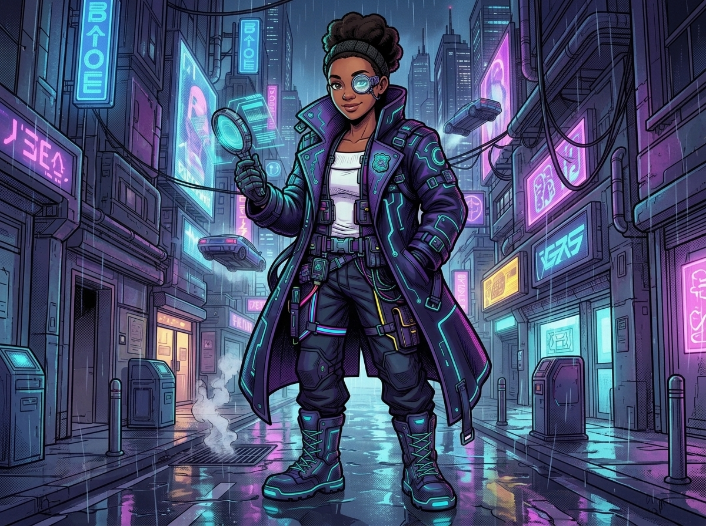
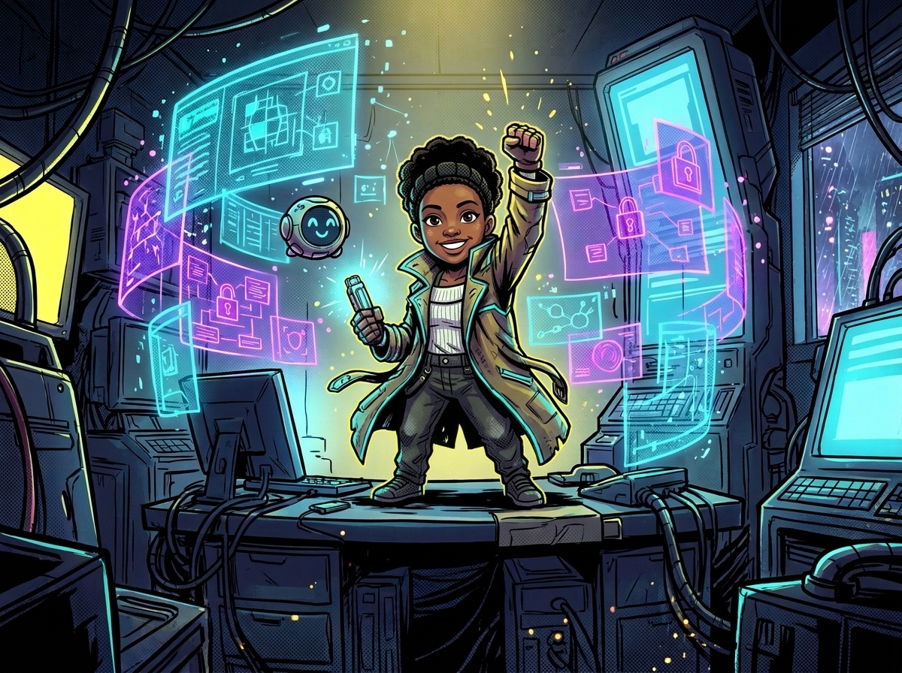
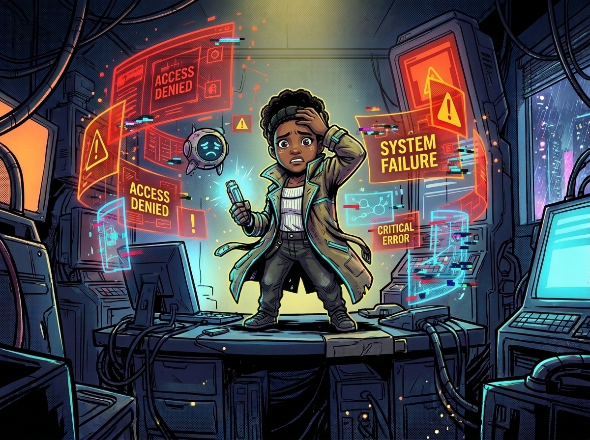

EVERY CLUE
MATTERS.
Investigate mysterious cases, examine evidence, question suspects and uncover the truth.

CASE ARCHIVE
Select an available investigation.
CASE TITLE
THE CITY'S YOUNGEST DETECTIVE
You are a sharp and determined young detective working for the Neon City Investigation Unit. You have a talent for noticing details that everyone else overlooks.
Your mission is to investigate mysterious cases, collect evidence, question suspects, solve challenging puzzles and uncover the truth. Every decision brings you closer to solving the mystery.
CASE CLASSIFICATION
LOCATION:
CASE NUMBER:
INCIDENT REPORT
DETECTIVE EVIDENCE

CONNECT THE CLUES
Arrange the words to reconstruct the evidence statement.
FOLLOW THE EVIDENCE
You are investigating a mysterious case in Neon City. Examine every detail carefully. Use the clues you have collected to reconstruct the evidence statement.
Think critically, connect the facts and avoid jumping to conclusions. The truth is hidden in the details.
Reconstruct the evidence statement.
FIND THE CONTRADICTION
Listen carefully. Decide whether each statement is true or false.
READ BETWEEN THE LINES
Your role is to question the suspects and identify contradictions in their stories. Pay attention to what they say and compare their statements with the evidence.
A convincing story is not always a truthful one. Trust the evidence, detective.
SUSPECT NAME
Suspect description
WHO IS RESPONSIBLE?
Review the evidence and select the person you believe committed the crime.
CASE REPORT

CASE EXPLANATION
CASE UNSOLVED
Your investigation has ended. Review the clues and try again.

Don't give up, detective.
You can retry this investigation.